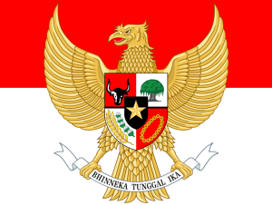
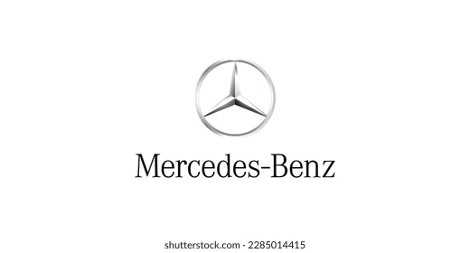

Gallery Postingan Blog

Pancasila
- Sila Pertama
- Ketuhanan Yang Maha Esa
- Sila Kedua
- Kemanusiaan yang Adil dan Beradab
- Sila Ketiga
- Persatuan Indonesia
- Sila Keempat
- Kerakyatan yang Dipimpin oleh Hikmat Kebijaksanaan dalam Permusyawaratan/Perwakilan
- Sila Kelima
- Keadilan Sosial bagi Seluruh Rakyat Indonesia
Baca Selengkapnya

Mercedes-Benz Generation :
- Predecessor model :
- Mercedes "Ponton" W180 (1954)
- Mercedes "Adenauer" W189 (1957)
- Mercedes "Fintail" W111 (1959)
- Mercedes "Fintail" W112 (1961)
- Mercedes "Stroke - 8" W108/W109 (1965)
- Mercedes "Stride" W107 (1968)
- Mercedes "Baby Benz" W201 (1982)
- Successor model :
- Mercedes "E-Class" W124 (1984)
- Mercedes "E-Class" W210 (1995)
- Mercedes "E-Class" W211 (2002)
- Mercedes "E-Class" W212 (2009)
- Mercedes "E-Class" W213 (2016)
- Mercedes "S-Class" W214 (2017)
- Mercedes "S-Class" W223 (2020)
- Mercedes "S-Class" W235 (2021)
- Mercedes "S-Class" W245 (2022)
- Mercedes "S-Class" W255 (2023)
- Mercedes "S-Class" W265 (2024)
Baca Selengkapnya